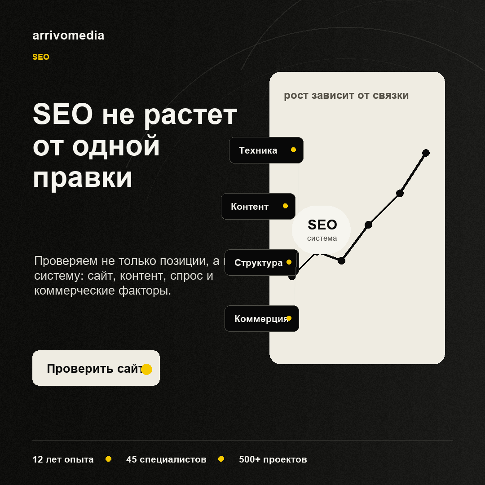
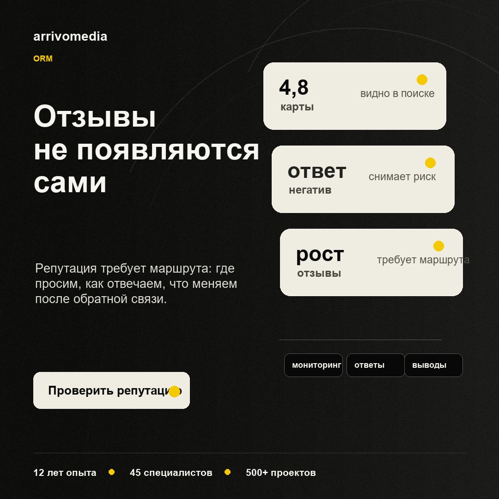

ArrivoMedia VK RSS
RSS for SMMplanner: feed.xml
Почему сайт может не расти в поиске даже после SEO-работ

Иногда SEO идет «по плану», а роста все равно нет: страницы оптимизированы, тексты добавлены, технические ошибки закрываются, но заявки не увеличиваются.
Чаще всего проблема не в одной настройке. SEO работает как система.
Что стоит проверить:
1. Техника
Если сайт медленный, часть страниц плохо индексируется или есть дубли, поиску сложнее оценить проект.
2. Структура
Запросы могут быть собраны, но под них нет понятных посадочных страниц. Тогда трафик уходит конкурентам.
3. Контент
Тексты могут быть написаны, но не закрывать вопрос пользователя: что предлагают, чем отличаются, почему можно доверять.
4. Коммерческие факторы
Контакты, цены, кейсы, отзывы, понятные формы заявки и навигация тоже влияют на доверие и конверсию.
5. Связка с бизнес-задачей
Позиции важны, но бизнесу нужны обращения. Поэтому SEO стоит смотреть вместе с аналитикой, поведением пользователей и качеством страниц.
В ArrivoMedia мы начинаем с диагностики: где сайт теряет видимость, трафик и заявки. Так проще не «делать SEO ради SEO», а понять, какие действия действительно могут повлиять на результат.
Если хотите увидеть слабые места сайта, напишите нам в сообщения сообщества.
Отзывы не растут сами: что ломает работу с репутацией

У компании может быть хороший продукт, но в выдаче и на площадках это не видно: отзывов мало, старые оценки висят годами, а негатив отвечает сам за бренд.
Репутация не растет сама. Ей нужен процесс.
Что чаще всего ломает ORM:
1. Не выбраны площадки
Отзывы собирают «где получится», а не там, где их реально видит аудитория: карты, отзовики, маркетплейсы, профильные сайты, поисковая выдача.
2. Нет маршрута для клиента
Если довольному клиенту неудобно оставить отзыв, он чаще всего не оставит его вообще.
3. Ответы звучат формально
Шаблонные реакции на негатив не решают конфликт и иногда только усиливают недоверие.
4. Негатив не превращается в выводы
Отзывы полезны не только для внешнего образа. Они показывают, где ломается сервис, коммуникация или ожидания клиента.
5. Нет регулярности
Работа с репутацией не делается одним рывком. Важно следить за новыми упоминаниями, отвечать, обновлять карточки и поддерживать актуальность информации.
В ArrivoMedia мы смотрим на ORM как на часть digital-системы: выдача, отзывы, карточки, ответы, контент и коммуникация должны работать вместе.
Если хотите понять, что сейчас видит клиент перед обращением к вам, напишите нам в сообщения сообщества.
Как мы подходим к аудиту digital-проекта
Digital-аудит нужен не для длинного списка ошибок. Его задача — показать, где проект теряет результат и какие действия дадут больше пользы.
Мы смотрим на проект как на систему.
Что входит в разбор:
1. Путь клиента
Откуда человек приходит, что видит первым, где сомневается и в какой момент может уйти.
2. Сайт и посадочные страницы
Понятна ли услуга, есть ли доверие, удобно ли оставить заявку, хватает ли аргументов и примеров.
3. Реклама и аналитика
Куда ведет трафик, какие кампании дают обращения, где бюджет расходуется без понятного результата.
4. SEO и контент
Какие страницы получают видимость, какие запросы не закрыты, хватает ли экспертных материалов.
5. SMM и репутация
Что человек видит в соцсетях, есть ли актуальность, кейсы, отзывы, ответы и понятный следующий шаг.
После аудита важен не только список проблем, а приоритеты: что исправить сначала, что можно отложить, а что вообще не влияет на бизнес-задачу.
В ArrivoMedia мы делаем аудит так, чтобы после него было понятно, куда двигаться дальше: по сайту, SEO, рекламе, SMM, ORM или всей системе сразу.
Если хотите разобрать digital-присутствие компании, напишите нам в сообщения сообщества.